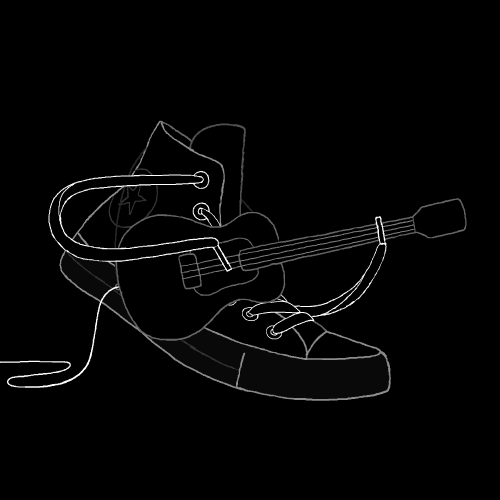
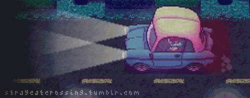

I was born in New Delhi. My Dad served in the navy for 22 years and now my Brother has also joined the navy.
I enjoy making things and have been working on a 2d platformer game called "Red Riding hood" where we play
as Red riding hood and have to travel through a forest killing minotaurs and collecting flowers. I like Reading,
and am currently reading "house of leaves". I like using things for purposes other than what they were intended for.
I like horse riding, scuba diving, playing the guitar, playing the piano, trekking and travelling. I am a thrill
seeker but now that I have taken CS, I am afraid that's no longer possible.
My Hobbies
Reading SCP Tales
One of my favourite pass times is to read SCP tales. The SCP foundation is a fictional organization that is
responsible for the containment of anomalous objects and entities, which may or may not be harmful. These
entities are classified into: Safe, Euclid and Keter based on their level of sentience and the ease of
containing them. The Home page is themed after the SCP Website front page.
Enjoy this SCP slide show:(click to change)
Guitar

I really enjoy playing the guitar (not as much as the piano though)
and have been playing it for around 7 years now. Recently my dad
bought an electric guitar so now I've learnt a couple of songs on
that as well. I performed in a "science rap" (or so it was called)
and our team won first prize (it was an inter-house activity). That
was the first (and last) time I participated in such an event.
Next year my CS teacher tried to make me participate in an interschool
movie making competition. I left CS and took P.Ed. (note that
both these events are unrelated in every way).
Piano

I started playing the piano last year
(around october or november).
I learnt to read sheet music so that
it becomes easier to learn new songs.
Below is part of a song called
"They try Harder" from Stray Cat Crossing,
played by me:
 HOME
ABOUT ME
CONTACT
GALLERY
SKILLS
GAME
HOME
ABOUT ME
CONTACT
GALLERY
SKILLS
GAME